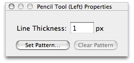

Using the pencil tool
The pencil tool is Pixen's most basic drawing tool. In order to use it, simply click and drag your mouse on the canvas, and the active color for the mouse button will be placed where your mouse moves. By default, it draws only one pixel, but that can be changed in the pencil tool's properties panel:

To change the size of the pencil tool:
Simply change the line thickness in the pencil tool's properties panel. The next time you draw, it will place a square of that many pixels on each side.
See also
Changing tool properties
Setting a tool's pattern
Tools
Patterns